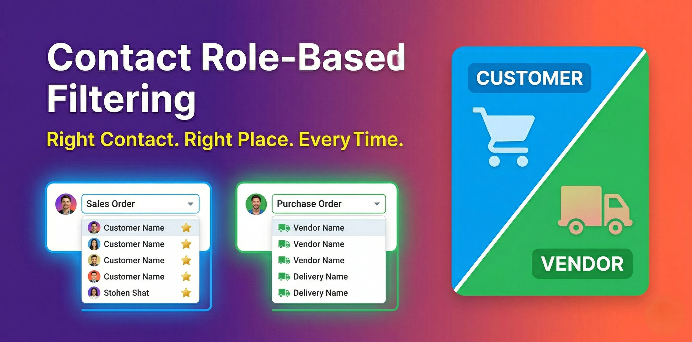

Odoo 18 Contacts Sales Purchase
A clean, simple module that introduces role-based contact classification so that Sales Orders show only Customers and Purchase Orders show only Vendors — automatically, with no manual filtering required.
In standard Odoo, all contacts are stored together — Customers, Vendors, Employees, and Others. When a user opens a Sales Order or Purchase Order, the contact dropdown shows everyone, causing:
This module adds two simple boolean fields to every contact — Is a Customer and Is a Vendor. Based on these flags:
| Contact Role | Visible in Sales | Visible in Purchase |
|---|---|---|
| Customer only | ✔ Yes | ✘ No |
| Vendor only | ✘ No | ✔ Yes |
| Customer + Vendor (Both) | ✔ Yes | ✔ Yes |
| None | ✘ No | ✘ No |